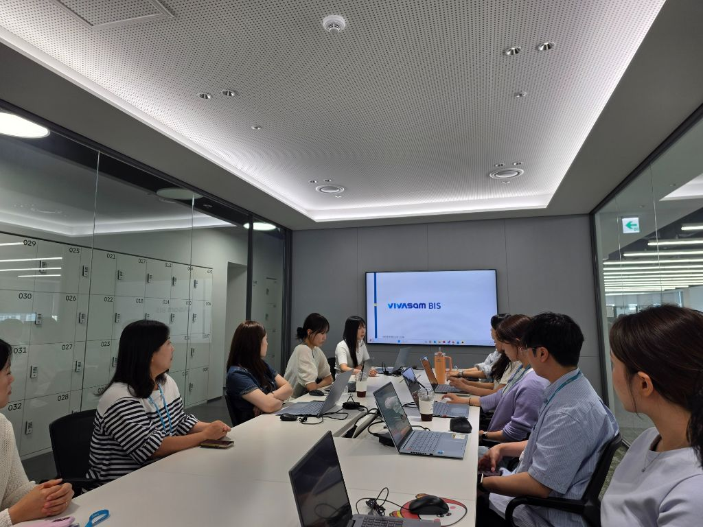

Presentation Record 05
2026 비바샘 BIS
발표 기록
비바샘마케팅 Cell · 신명주 CP
비전·미션·브랜드 정의·핵심가치를 한 흐름으로 정리해 비바샘의 정체성을 구조화한 발표.
비바샘을 “교사를 가장 잘 이해하는 교수·학습 플랫폼”으로 정의하고, 브랜드가 지향해야 할 비전과 약속을 한 문장씩 선명하게 정리한 발표입니다. 전략 문서를 서비스 언어로 번역하기 좋은 구조를 가지고 있습니다.

Presentation Record 05
발표 기록
비바샘마케팅 Cell · 신명주 CP
비전·미션·브랜드 정의·핵심가치를 한 흐름으로 정리해 비바샘의 정체성을 구조화한 발표.
비바샘을 “교사를 가장 잘 이해하는 교수·학습 플랫폼”으로 정의하고, 브랜드가 지향해야 할 비전과 약속을 한 문장씩 선명하게 정리한 발표입니다. 전략 문서를 서비스 언어로 번역하기 좋은 구조를 가지고 있습니다.

비바샘은 교수·학습 원스톱 생태계를 구축해 교사가 가장 먼저 찾는 파트너가 되는 것을 비전으로 둡니다. 플랫폼을 넘어 생태계라는 단어를 쓰는 점이 중요합니다.
선생님이 원하는 교육을 실현하는 데 필요한 모든 것을 지원한다는 문장으로 미션이 정리됩니다. 기능 제공보다 교육 실현의 조력자 역할을 강조합니다.
“선생님을 가장 잘 이해하는 교수·학습 플랫폼”이라는 정의가 발표의 중심축입니다. 누구를 위해 존재하는지, 어떤 태도를 갖는지 한 문장으로 명확히 보여줍니다.
현장성, 혁신, 동행이라는 세 가지 가치가 제시됩니다. 실용성, AI·에듀테크, 여정 지원이 각각의 가치와 연결됩니다.
상상하던 교육의 실현이라는 브랜드 에센스가 약속의 문장으로 이어집니다. 추상적인 브랜드 표현을 서비스 경험 언어로 옮기기 쉽도록 정리된 구조입니다.
“선생님 곁의 가장 완벽한 교육 파트너”, “내일을 위한 매일의 선택” 등의 문장이 브랜드 말투를 완성합니다. 전략이 곧 문장 시스템으로 정리된 사례입니다.